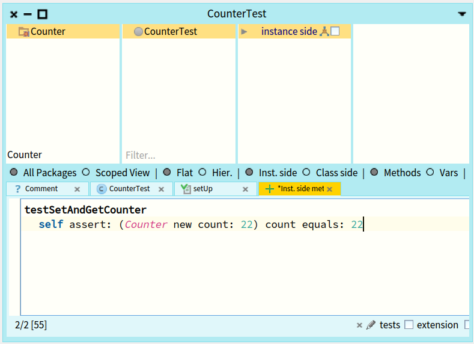
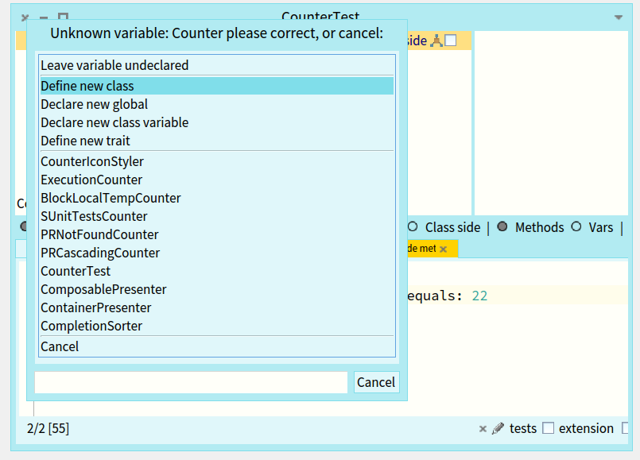
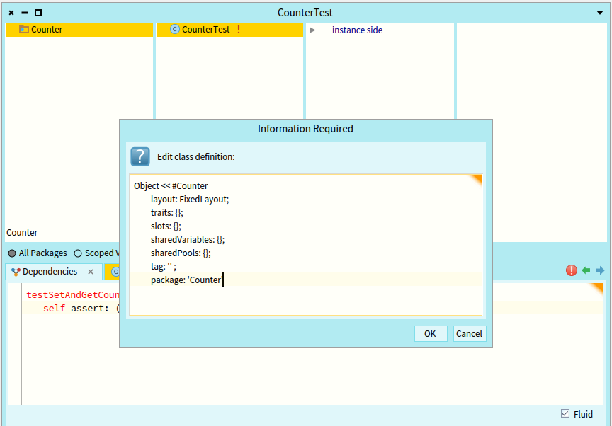
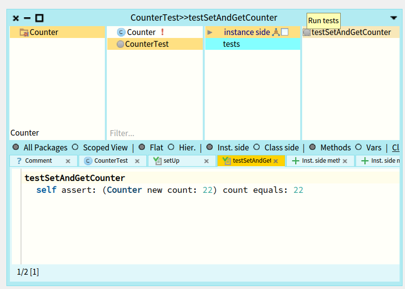
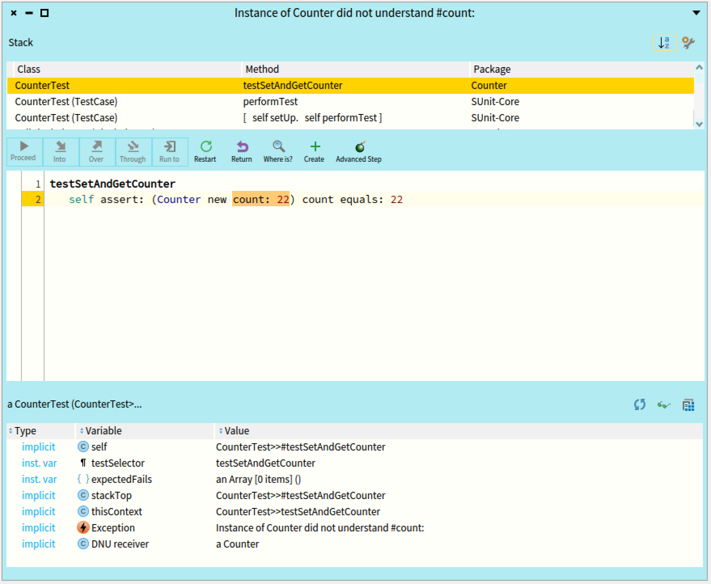
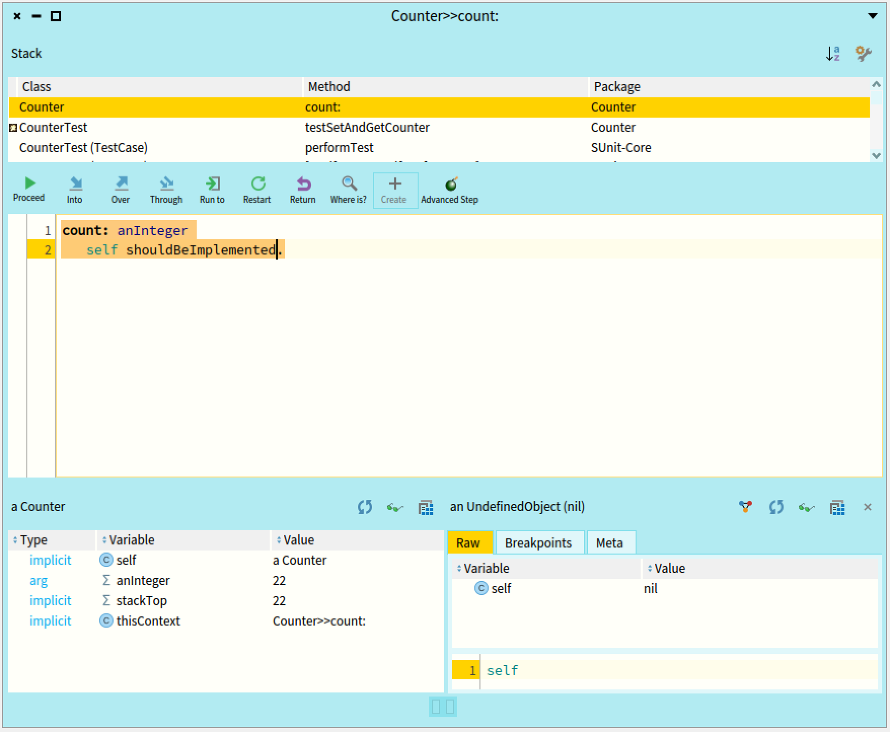
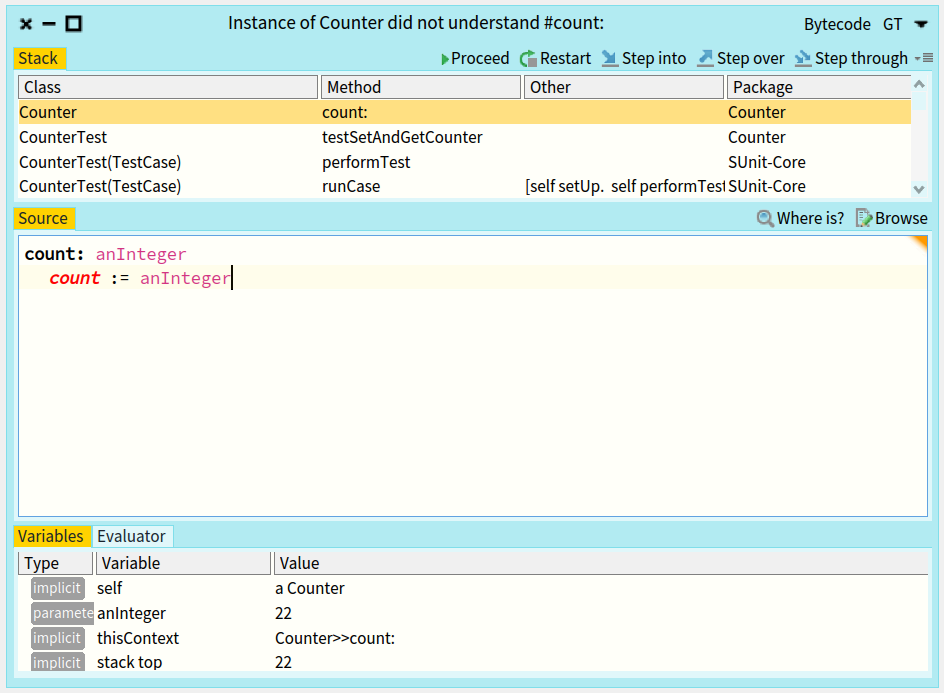
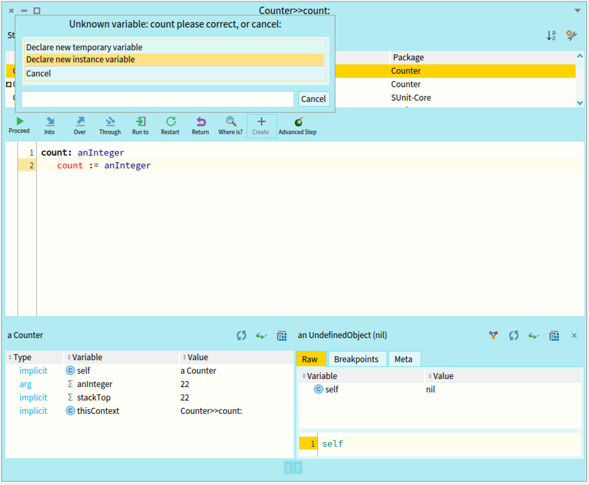
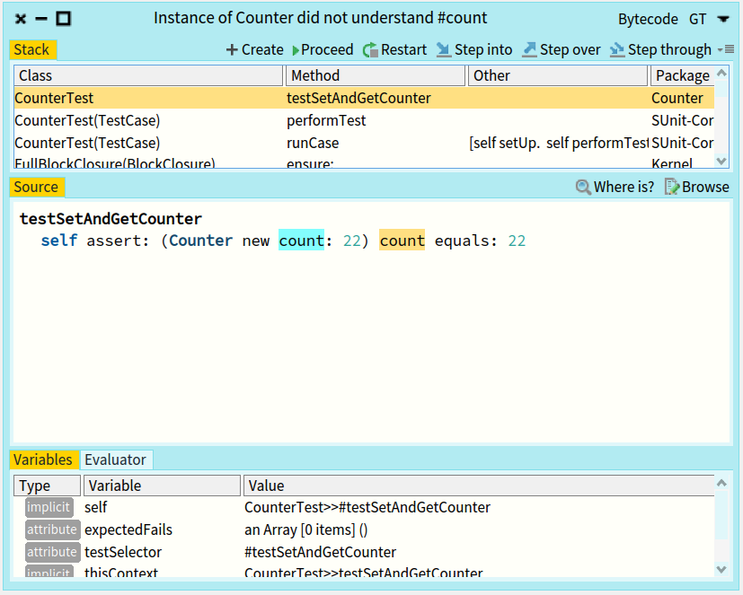
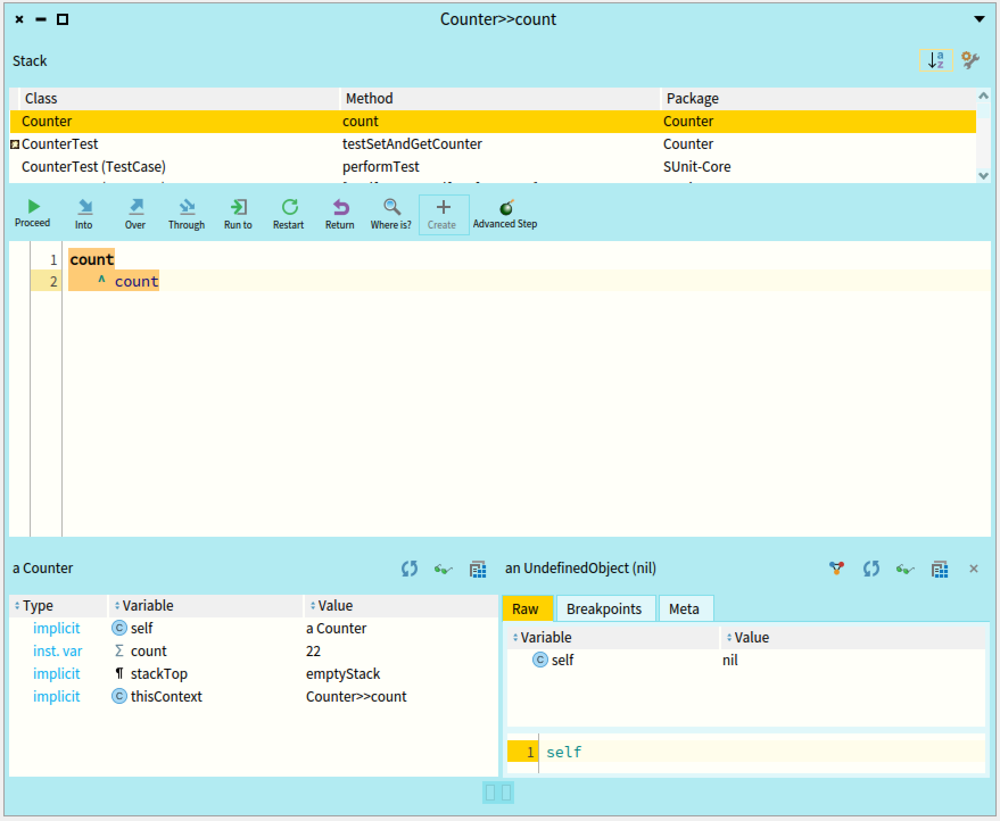

4 Extreme Test-Driven Development by Example
In this chapter we will describe eXtreme Test-Driven Development (XTDD). XTDD is a unique feature of Pharo and its tools. We show that XTDD is Test-Driven Development on steroids. What is really exciting is that XTDD takes live programming at its best. It shows that in Pharo we can develop smart tools that offer to developers an absolutely gorgeous development flow.
4.1 A simple and powerful principle
The main idea behind XTDD is to avoid breaking the development flow and to take advantage of live programming. It is as simple as:
- First, you write a test.
- Second, you execute the test.
- When it breaks, you define classes, methods, or add instance variables on the fly in the debugger.
- Then, you resume the execution from the debugger and continue the execution until the test is green.
What you should see is that there is no border between specifying a test and developing the code under test. You develop in the flow of the executed program interacting with the objects as you go along.
4.2 Studying an example
Let us illustrate eXtreme Test-Driven Development. We use a dead simple counter. Nothing simpler. This way we will focus on the essence of the process. We want to show you that you can do it.
Basically we will define a test, and the system will help define missing entities (classes). Then we will execute the test. It will break and via the debugger, we will create new methods, add new instance variables and continue the execution without getting out of the debugger.
Let us get started.
4.3 Before executing a test
Define a package and an empty test case class
First we define a package Counter and define a subclass of TestCase named CounterTest.
TestCase << #CounterTest
package: 'Counter'Counter slanted because that class
does not exist.
Define a first test
We define a first test testSetAndGetCounter that
- creates a new instance of the class
Counter, - defines its count value using the setter
count:, - and verifies that the count value is correct.
CounterTest >> testSetAndGetCounter
self assert: (Counter new count: 22) count equals: 22Now during the definition of the method, the system will notify you because the class Counter does not exist.
Figure 4.1 shows that the IDE presents the class Counter slanted to show that this class
does not exist.
When you compile the method, the system asks you to define the missing class (see Figure 4.2).
Counter is undefined.
Finally, the class browser proposes you a class definition so that you can define the missing class on the spot (See Figure 4.3). Once the class is defined you will see that it is not slanted anymore in the class browser. And you are ready to execute the test even if you did not define any method yet! This is the whole point of XTDD.
Counter.
4.4 Executing a test to define missing methods
Even if we did not define any methods yet, we will execute the test.
We will just press the little grey button on the left of the method name in the rightmost list as shown in Figure 4.4.
It will raise an error because the methods count: and count are not defined.

Figure 4.5 shows the debugger: It indicates that an instance of the class Counter did not understand the message count:.
So far so good, this is what we expected.
count: is not defined hence led to an error.
Define a method on the fly
Now we are ready to create a method on the fly.
Just press the button Create. You will get prompted for the class: pick up the class Counter.
The debugger will show you that the system created a generic method named count: for you.
It is generic because there is no magic. As shown in Figure 4.6, this method is the following one:
Counter >> count: anInteger
self shouldBeImplementedThe message shouldBeImplemented is just a method to raise a specific error. So that the debugger reopens and you can redefine the method.

Edit the method in the debugger
Now just edit the method right in the debugger as follows and shown in Figure 4.7.
Here we just want a setter that sets the value of the instance variable count.
So we just type it!
count: anInteger
count := anIntegerHere we define the method as we want it and yes the instance variable count does not exist yet.
Do it and compile the method. The class browser will prompt you for the creation of count as an instance variable.
count does not exist yet.

Compile the method, answer the prompt and you should get the method that we defined previously. Now continue the execution by pressing the Proceed button.
The system will fail again because we did not define the method count as shown in Figure 4.9.
You should just add this method as previously shown.
count was not defined.
Now notice that the compiler is guessing that the method is an accessor since it has the same name as the instance variable count (see Figure 4.10). It proposes you the method body as:
Counter >> count
^ countSo just accept and press proceed. Your test should be green and you get done.

4.5 Stepping back: Supporting the programmer flow
The system performed several actions to improve the flow of programming:
- It created new methods for us.
- It removed from the stack, the element with Error.
- It replaced it by re-executing the method that was invoking the missing one.
- It relaunched the execution so that we can define the method and proceed with the execution.
We edited and recompiled the method. And we could continue within the exact same flow of programming.
4.6 One cycle
We show you one simple cycle and now you are ready to:
- Run all the tests to check if nothing was broken.
- Commit your changes if the tests are green.
- Write a new test for the next cycle.
4.7 Why XTDD is powerful?
EXtreme Test-Driven development is powerful because for the following reasons:
- You do not have to guess what will be the exact context of the call of a method. Since you are in the debugger you can access all the objects (receiver or arguments), and you can inspect their specific state. So you avoid guessing, the objects are at your fingers just interact with them to validate the hypotheses you need for defining your methods.
- Tests are not a side effect artifact but a strong driving force.
- The development flow is smooth and strongly connected with your scenario. You write a test and use the test execution to define a context
that helps you define the method. You define methods or instance variables as you go and when you need them. You do not have to plan and guess in advance.
Protip from expert Pharo developers
Pharo pro developers know what they can gain from XTDD this is why they try to grab an instance as fast as they can and send this object a message. The best way is to write a test fixture and execute it.